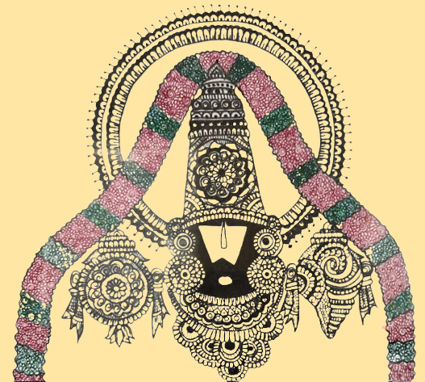

Hari Om
I, Pavithra Aravind, founded Shri Vihar, a spiritual initiative to teach devotional Slokas, Bhajans and good
practices and discipline through nuggets of stories from historical epics like Ramayana and Mahabharata. What
started as a small initiative in 2019 with a few kids in the community has grown to become a routine and the
growing interest from the kids and parents led to the founding of Shri Vihar.
I am passionate about teaching new things to kids and giving them opportunities to explore their talents. Shri
Vihar kids have recited several slokas like Ashtakams, Pancharatnams, and other short slokas at Sri Ganesha
Temple in Dallas, TX on the occasion of Ganesh Chaturti and at other places for other occasions, as well.
I pray to lord Venkateshwara to give me the knowledge and strength to continue this service.
Sloka classes are offered online as well as in-person. The classes are in 3 different levels:
1. Easy level — For kids under 6 years of age.
2. Intermediate level — For kids of age 7-9 years.
3. Challenging level — For kids 9 years and above.